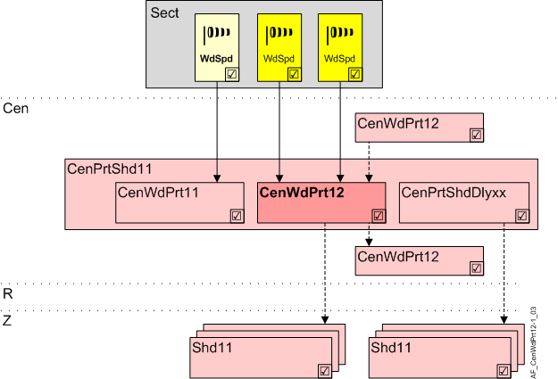

Central wind protection 2 (CenWdPrt12)
Overview
The application function "Central wind protection 12" (CenWdPrt12) handles one or more wind sensors with two limit values.

Sect | Facade sector |
WdSpd | Wind speed |
Cen | Central functions |
CenPrtShd11 | Central protection shading 11 |
CenWdPrt11 | Central wind protection 11 |
CenWdPrt12 | Central wind protection 12 |
CenPrtShdDlyxx | Central protection shading delay 11...13 |
R | Room |
Z | Shading zone in one room segment |
Shd11 | Shading 11, for shading and daylight use with venetian blinds or awnings, group members |
Function
The AF reads the values from one or more wind sensors, determines the highest value and attenuates the result using switch on and off delays. The result (WdSpdRs) is provided for monitoring.
The permissible limit values are configured as per the design value of the shading products.
The AF transfers the following to CenPrtShd11:
- A configurable blinds setting (CmdLmExc) in the event the limit value is exceeded.
- A configurable blinds setting (CmdSenFlt) in the event of a sensor fault (if all wind sensors report "unreliable").
Hierarchical grouping
This AF supports hierarchical grouping. For detailed information, see Hierarchical grouping.
Interface to local and superordinate functions
Local inputs and superordinate AFs access the same BACnet objects. Evaluation by priority. The local protection input has higher priority than the shading command of the superordinate central functions.
Configuration
 Parameter
Parameter
Description | Parameter | Default value |
|---|---|---|
Switch-on point sensor 1 | SwiOnPtSen1 | 7 [m/s], 1378.0 [ft/min] |
Switch-off point sensor 1 | SwiOffPtSen1 | 5 [m/s], 984.3 [ft/min] |
Switch-on delay protection function sensor 1 0...300 [min] | DlyOnPrtSen1 | 0 [min] |
Switch-off delay protection function sensor 1 0...300 [min] | DlyOffPrtSen1 | 20 [min] |
Switch-on point sensor 2 | SwiOnPtSen2 | 7 [m/s], 1378.0 [ft/min] |
Switch-off point sensor 2 | SwiOffPtSen2 | 5 [m/s], 984.3 [ft/min] |
Switch-on delay protection function sensor 2 0...300 [min] | DlyOnPrtSen2 | 0 [min] |
Switch-off delay protection function sensor 2 0...300 [min] | DlyOffPrtSen2 | 20 [min] |
Command on limit exceed 1:None | CmdLmExc | 2:Open |
Command on sensor fault Enumeration see CmdLmExc | CmdSenFlt | 2:Open |
Air velocity unit [m/s], [ft/min] | AirVUnit | [m/s] |
Interface
Interface | Description | Type | Ref. | Owner | |
|---|---|---|---|---|---|
WdSpdFstCol | Collection of first wind speed | ColView | ● | - | |
| WdSpdFstRs | Result of first wind speed | ACalcVal | ● | - |
WdSpdFst | First wind speed | AI | ◉ | Central function / Device | |
WdSpdScdCol | Collection of second wind speed | ColView | ● | - | |
| WdSpdScdRs | Result of second wind speed | ACalcVal | ● | - |
WdSpdScd | Second wind speed | AI | ◉ | Central function / Device | |
Engineering and commissioning
The AF is unavailable on preloaded applications.
Another wind speed may dominate depending on location (weather station, roof, facade, building edge). Multiple limit values can be defined to compensate for deviations between wind sensors and shading products. For one limit value, use CenWdPrt11; for three limit values use CenWdPrt11 and CenWdPrt12.